Vos agents IA méritent mieux qu’un mur de texte.
AgentUI transforme les réponses de vos agents en graphiques, tableaux, cartes, formulaires et suivis de tâches interactifs — sur desktop comme sur mobile.
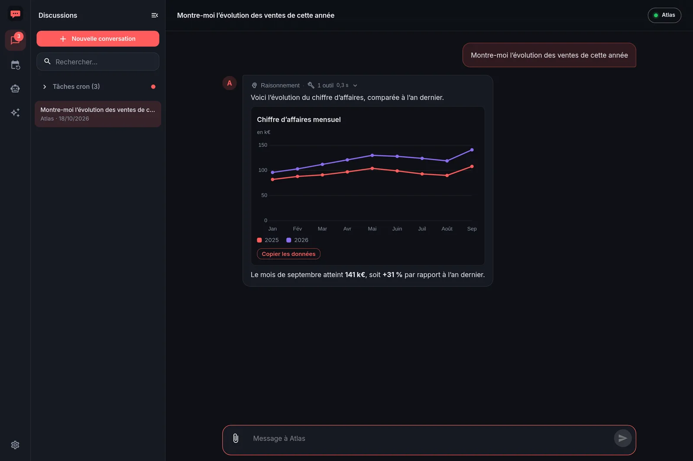
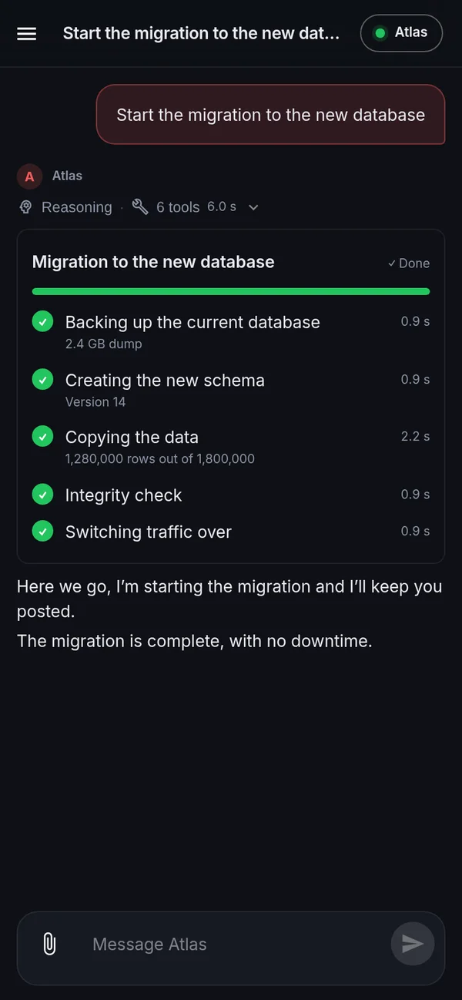
Se branche sur vos plateformes d’agents
- Hermes
- OpenClaw
- Votre agent, via le protocole canal
Le bon composant, au bon moment.
Chaque widget est un outil que l’agent appelle : il valide ses arguments, et l’interface affiche un vrai composant — pas du Markdown bricolé.
Des courbes, barres et camemberts qui répondent au doigt.
L’agent passe ses séries, AgentUI trace. Info-bulles au survol, graduations lisibles, donut interactif, copie des données en un clic.
- Courbes, barres, camemberts
- Unités et légendes automatiques
- Clair et sombre
agentui_chart

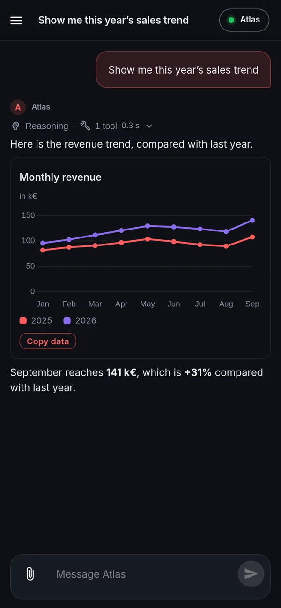
Des données triables, prêtes à être copiées.
Colonnes typées, nombres alignés, unités affichées et export CSV. Jusqu’à 200 lignes sans quitter la conversation.
- Tri numérique et alphabétique
- Unités par colonne
- Copie au format CSV
agentui_table
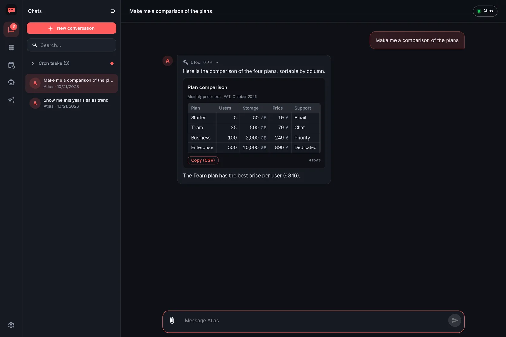
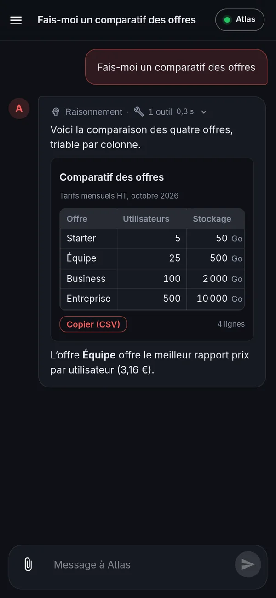
Un itinéraire, des lieux, un bouton « Ouvrir dans Maps ».
Jusqu’à dix points avec leur popup en Markdown, et un lien direct vers votre application de cartes pour la navigation.
- Fond de carte adapté au thème
- Popups détaillées par point
- Ouverture dans Maps
agentui_map
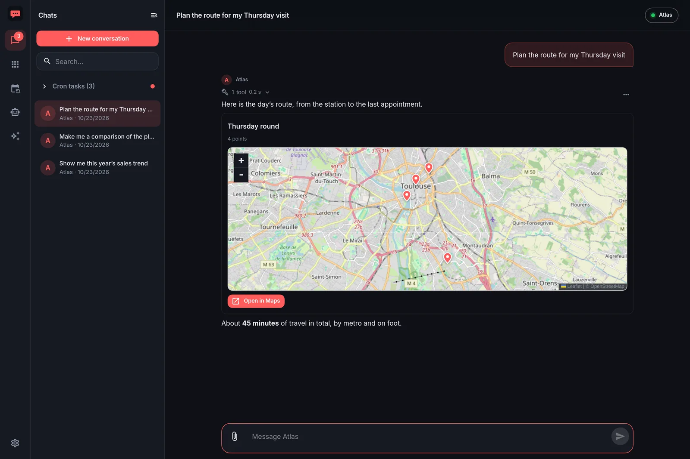
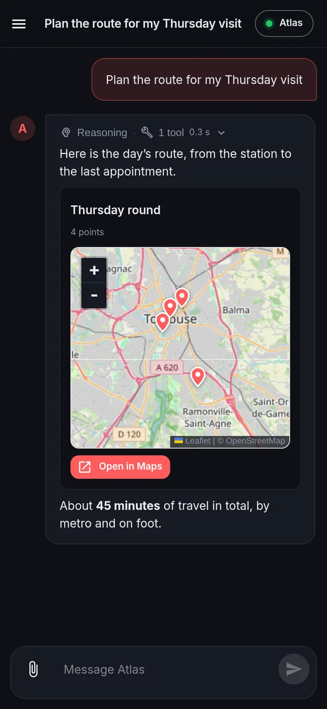
Voyez l’agent travailler, étape par étape.
Une checklist vivante : l’agent met à jour le même composant au fil de l’eau, avec la durée de chaque étape et un compteur en direct pour celle en cours.
- Statuts : en attente, en cours, terminé, échec, ignoré
- Détail et durée par étape
- Un seul composant, mis à jour sur place
agentui_progress
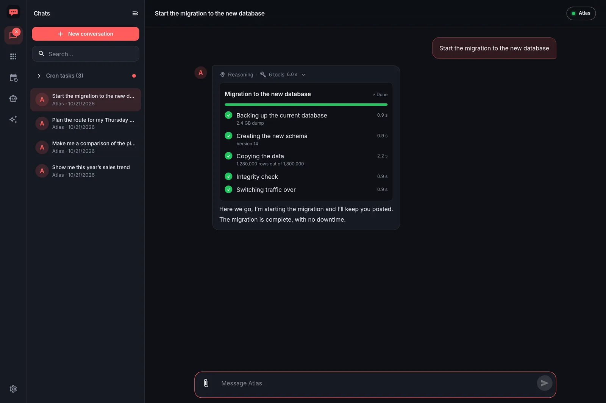

Du code lisible, avec les changements en couleur.
Coloration syntaxique, numéros de ligne, lignes mises en évidence et rendu diff pour montrer exactement ce qui change.
- Coloration par langage
- Diff ajouté / supprimé
- Bouton Copier
agentui_code
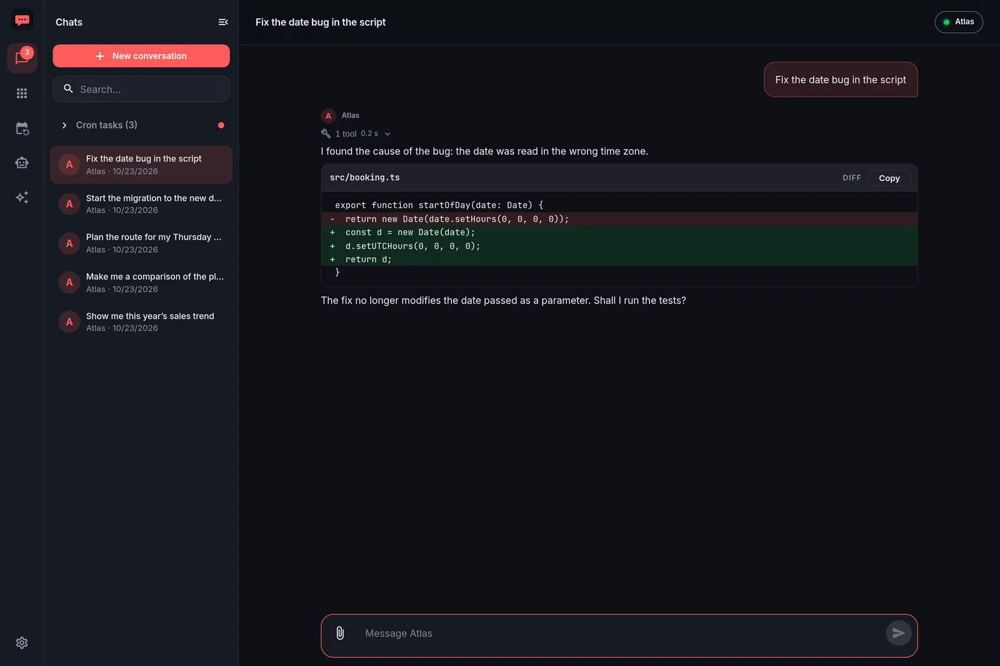
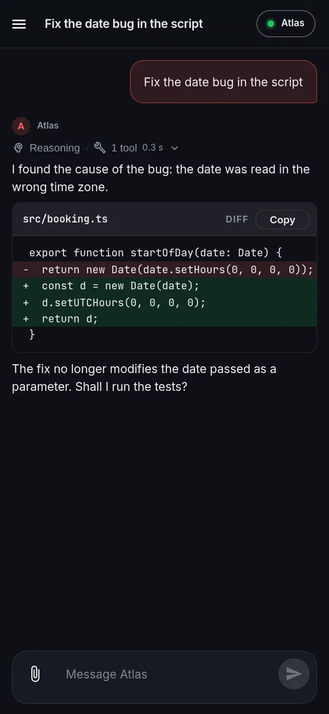
L’agent pose la question, vous répondez d’un geste.
Confirmations (y compris en mode « danger »), questions à choix et formulaires complets : l’agent attend votre réponse, puis reprend son travail là où il s’était arrêté.
- Confirmer / annuler avant une action sensible
- Formulaires : texte, date, liste, case à cocher…
- Validation avant envoi
agentui_confirmagentui_formagentui_ask


Quand rien ne convient, l’agent code le widget.
Simulateur, convertisseur, liste filtrable, mini-quiz : l’agent écrit un composant React avec la même bibliothèque que les miniapps. Il s’affiche dans la conversation, suit le thème et réagit à vos saisies en direct.
- Exécuté dans un iframe isolé, sans accès à votre session
- Mêmes composants et mêmes couleurs que les miniapps
- Ses boutons peuvent écrire dans la conversation : « Détails », « Réserver »… l’agent reçoit la réponse comme un message
- Pour garder l’outil, l’agent en fait une miniapp
agentui_custom_widget
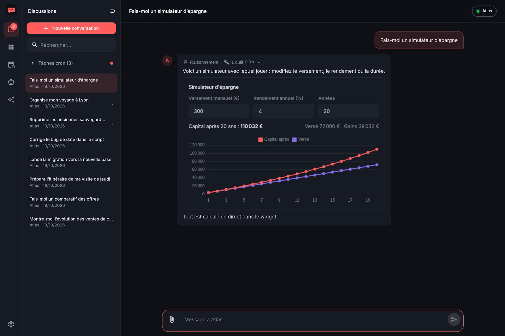
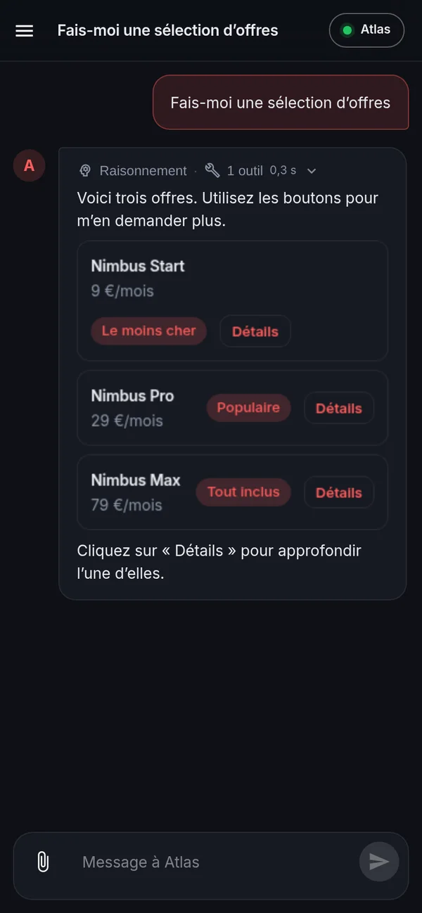
Vos agents ne se contentent plus de répondre. Ils construisent vos outils.
Un suivi de dépenses, un tableau de bord, une liste partagée : demandez-le à l’agent, il écrit une miniapp — un front React et ses handlers côté serveur — qui apparaît dans l’onglet Miniapps, aux couleurs d’AgentUI.
Une vraie application, pas une page web collée à côté.
L’agent dispose d’un kit de composants React et des variables CSS du thème : la miniapp suit le mode clair ou sombre, la langue et le format mobile de l’application, sans une ligne de style en dur.
- Composants prêts à l’emploi : formulaires, listes, tableaux, graphiques
- Pensées d’abord pour le téléphone
- Mise à jour en direct quand l’agent modifie la miniapp
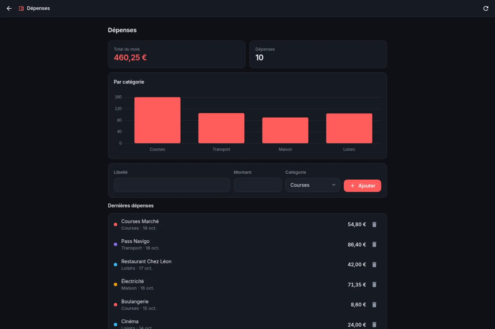
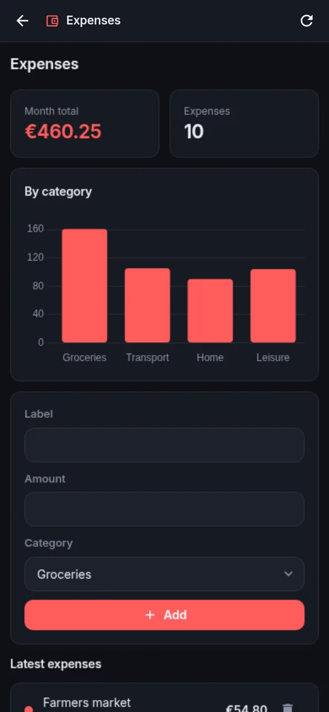
L’agent écrit
Il lit le guide fourni par le plugin, puis envoie ses fichiers avec des outils agentui_miniapp_*. Les erreurs de compilation lui reviennent avec le fichier et la ligne : il corrige tout seul.
AgentUI compile et isole
Le front tourne dans une iframe sandbox, sans accès à votre session. Les handlers s’exécutent dans un worker isolé, avec leurs propres données, protégés par l’authentification d’AgentUI.
La miniapp apparaît
Elle est dans l’onglet Miniapps, tout de suite. Un cron ou l’agent peut y pousser de nouvelles données : la miniapp ouverte se rafraîchit seule.
Un backend par miniapp, sans rien à héberger.
Chaque miniapp a ses collections de documents et son stockage clé/valeur, isolés des autres. Ses handlers peuvent appeler des API publiques pour afficher des données en direct ; les adresses internes de votre serveur restent inaccessibles.
- Routes protégées par la session AgentUI, un espace de noms par miniapp
- Appels HTTP sortants bornés (durée, taille, adresses publiques uniquement)
- L’agent lit et écrit les données avec
agentui_miniapp_data
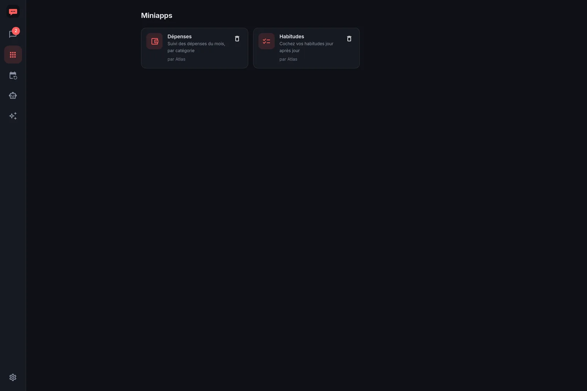
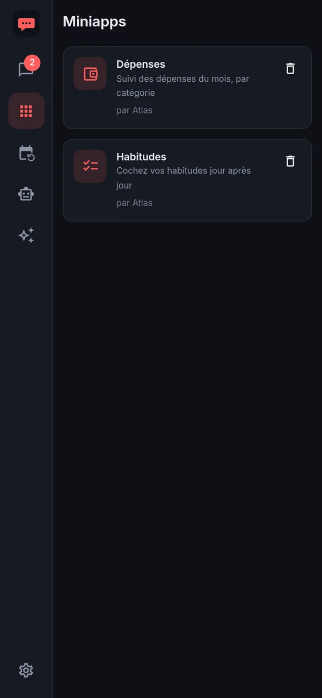
Vos agents travaillent la nuit. Vous retrouvez tout au réveil.
Résumés du matin, veilles, sauvegardes… Chaque tâche cron de vos agents a sa propre discussion : le résultat arrive comme un vrai message, widgets compris.
Le résultat arrive dans la discussion de la tâche.
L’agent n’attend pas que vous lui parliez : à chaque exécution, il poste un message proactif dans la discussion « ⏰ nom de la tâche ». Vous pouvez y répondre et continuer la conversation à partir de ce résultat.
- Une discussion par tâche, rangée dans la section « Tâches cron »
- Pastille « non lu » et repère « Nouveau message »
- Tableaux, listes et autres widgets dans le message
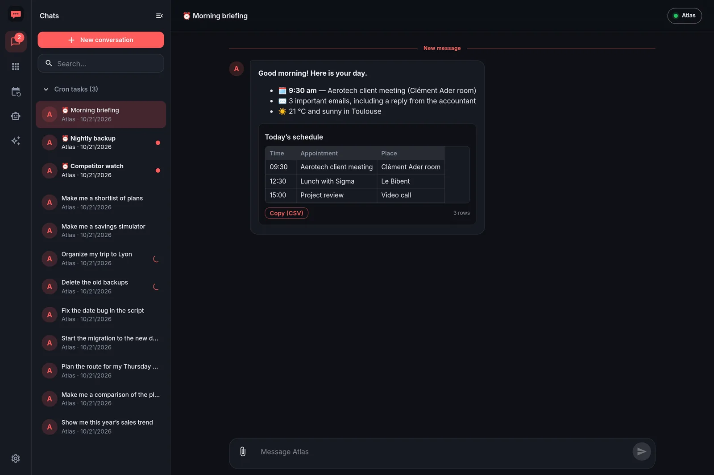
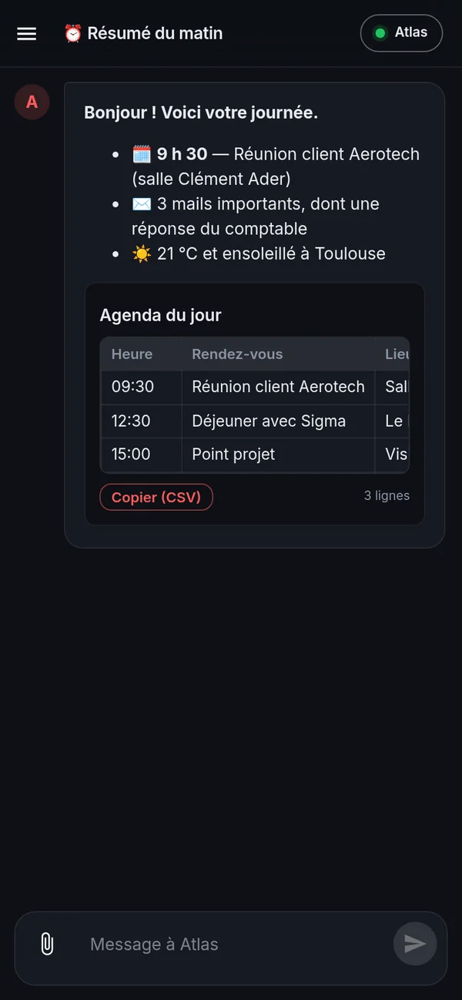
La tâche s’exécute
Le planificateur de la plateforme (Hermes, OpenClaw…) lance la tâche à l’heure prévue — prompt confié à l’agent, ou simple script.
Le message arrive
Le plugin le transmet à AgentUI, qui le range dans la discussion dédiée. Elle est créée automatiquement à la première exécution.
Vous êtes prévenu
Une notification push s’affiche ; un clic ouvre directement la bonne discussion, même si l’application était fermée.
Ce qui a marché, ce qui a échoué — et pourquoi.
Planification, prochaine exécution, dernier statut : tout est sur une page. En cas d’échec, le message d’erreur complet est à un clic, sans aller fouiller les journaux du serveur.
- Statut et erreur de la dernière exécution
- Accès direct à la discussion de la tâche
- Pause, reprise, « Exécuter maintenant », suppression
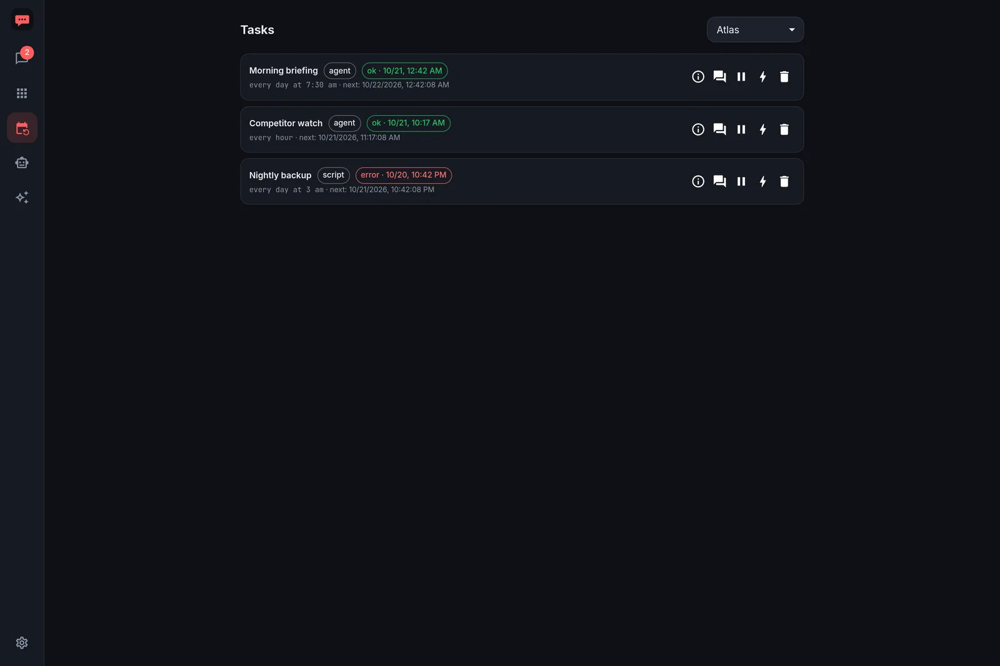
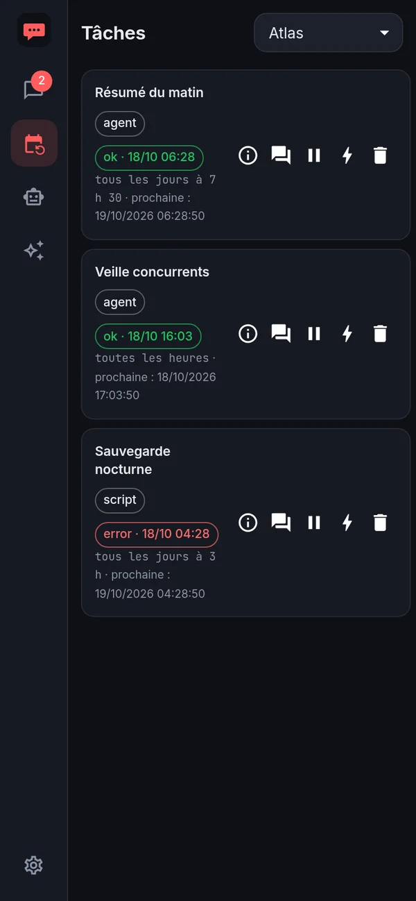
Pensée pour le mobile. À l’aise partout.
Une PWA installable sur l’écran d’accueil, avec un thème clair, un thème sombre et un tiroir de discussions qui s’efface devant la conversation.
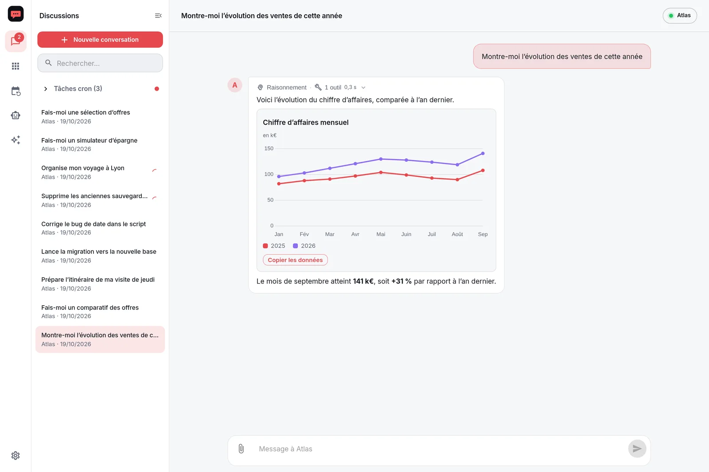
Thème clair · desktop
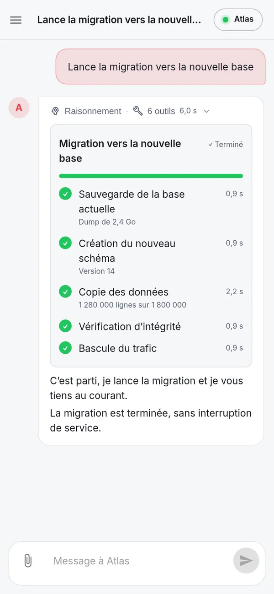
Clair · mobile
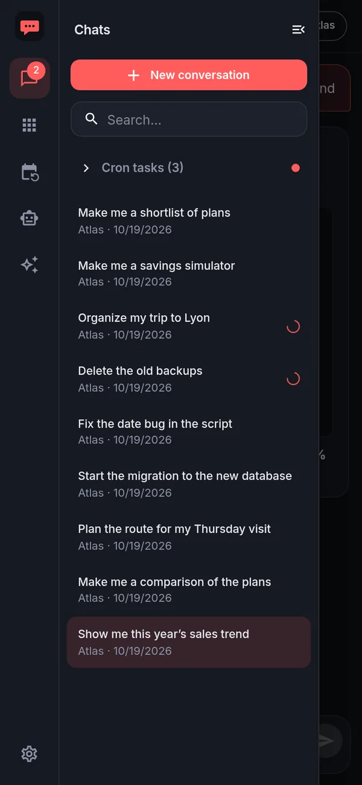
Liste des discussions
Tout ce qu’il faut pour vivre avec vos agents.
Notifications push
Soyez prévenu quand un agent répond ou qu’une tâche planifiée se termine — un clic ouvre la bonne discussion.
Miniapps créées par l’agent
Suivi, tableau de bord, liste : l’agent écrit une petite application qui apparaît dans AgentUI, aux couleurs de l’interface.
Tâches planifiées
Visualisez les crons de vos agents, leur dernier statut et leurs erreurs. Mettez en pause, lancez ou supprimez.
Skills lisibles
Parcourez les skills de chaque agent et lisez leur contenu directement dans l’application.
Plusieurs agents
Hermes, OpenClaw ou les vôtres, côte à côte. Filtrez la liste par agent et reprenez n’importe quelle discussion.
Pièces jointes & images
Envoyez fichiers et images à l’agent ; il vous renvoie des visuels affichés dans la conversation.
Chez vous, sous votre contrôle
Auto-hébergé via Docker. Chaque plateforme s’authentifie par son propre jeton ; vos données restent sur votre serveur.
Un plugin, un protocole, zéro bricolage.
AgentUI se connecte à votre plateforme comme Telegram à un bot : par un plugin canal qui parle un protocole WebSocket simple.
Installez le plugin
Plugins fournis pour Hermes et OpenClaw. La plateforme ouvre la connexion vers AgentUI — rien à exposer de son côté.
L’agent reçoit de nouveaux outils
Graphique, tableau, carte, progression, code, formulaire… décrits comme de vrais outils, avec leurs schémas.
L’interface fait le reste
L’agent appelle l’outil et place le jeton dans sa réponse. AgentUI le remplace par le composant, en direct pendant le streaming.
// L’agent appelle un outil… agentui_chart({ kind: "line", title: "Chiffre d’affaires mensuel", unit: " k€", x: ["Jan", "Fév", "Mar"], series: [{ name: "2026", y: [96, 103, 112] }] }) // …et place le jeton dans sa réponse : "Voici l’évolution : [[agentui:a3f9c1]]" // AgentUI affiche le graphique à cet endroit.
Où AgentUI se place, honnêtement.
Face aux messageries (Telegram, Discord…) et aux interfaces web qui passent par l’API (Open WebUI, Hermes WebUI…). Chaque approche a ses forces.
| MessageriesTelegram, Discord, WhatsApp… | UI web via APIOpen WebUI, Hermes WebUI… | AgentUIPlugin canal + PWA | |
|---|---|---|---|
| Plusieurs discussions | ~Topics ou threads, selon la messagerie | ✓Oui | ✓Une session distincte par discussion |
| Rendu riche (graphiques, tableaux, cartes, formulaires) | ✗Texte et boutons | ~Markdown, selon l’outil | ✓Widgets appelés comme des outils |
| Outils, raisonnement, sous-agents, coût | ✗Non affichés | ~Partiel, dépend de l’API | ✓Événements natifs du protocole |
| Approbations et questions en cours d’exécution | ~Boutons inline à bricoler | ✗Pas dans une API de chat | ✓Natifs, la discussion continue |
| Messages proactifs (crons, rappels) | ✓Oui | ✗Pas de canal pour l’agent | ✓Chat dédié « Messages de l’agent » |
| Pilotage des tâches planifiées et des skills | ✗Non | ~Selon l’UI : certaines le permettent | ✓Pause, lancement, erreurs, lecture |
| Notifications push sur mobile | ✓Excellentes, rien à configurer | ~Variable selon l’outil | ~Oui, mais HTTPS requis (iPhone : écran d’accueil) |
| Agent derrière un NAT | ✓Oui | ✗L’API doit être joignable | ✓Connexion sortante du plugin |
| Données sous votre contrôle | ✗Passent par un tiers | ✓Auto-hébergé | ✓Auto-hébergé |
| Mise en place | ✓Presque rien | ~Une UI à installer et à brancher | ~Un service + un plugin par plateforme |
| Maturité et communauté | ✓Très mûr | ✓Grosses communautés | ✗Jeune, un seul mainteneur |
| Indépendance vis-à-vis de la plateforme | ✓Bonne | ✓Très bonne (API standard) | ~Un plugin à maintenir pour Hermes, OpenClaw… |
✓ bien couvert · ~ partiel ou avec réserves · ✗ absent ou peu adapté. Appréciations générales, qui varient selon l’outil et sa version.
Donnez un vrai visage à vos agents.
Déployez AgentUI en quelques minutes avec Docker, branchez vos agents, et regardez vos conversations prendre vie.